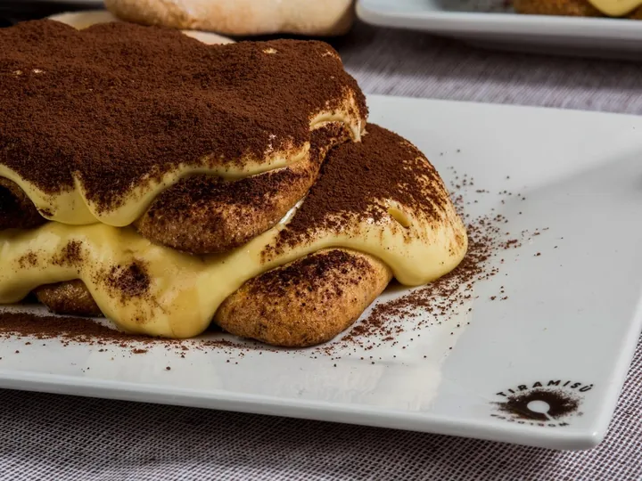

da ven 9 ott a dom 11 ott
Tiramisù World Cup
La Tiramisù World Cup torna dal 9 all’11 ottobre . La “sfida più golosa del mondo” festeggia il suo 10° compleanno con ancora più concorrenti, più eventi e tante novità. Ricco è infatti il programma di questa edizione, che celebra la Cucina Italiana, che è stata riconosciuta fra…
 Indicazioni
Indicazioni
- Costi e prenotazioni
- Costo non indicato · Prenotazione non indicata
- Programma
- Programma da verificare. Apri la fonte ufficiale per orari e possibili aggiornamenti.
- In caso di maltempo
- Nessuna indicazione specifica pubblicata.
- Note
- Acquisito automaticamente dalla fonte.
L’EVENTO
Descrizione completa
La Tiramisù World Cup torna dal 9 all’11 ottobre . La “sfida più golosa del mondo” festeggia il suo 10° compleanno con ancora più concorrenti, più eventi e tante novità. Ricco è infatti il programma di questa edizione, che celebra la Cucina Italiana, che è stata riconosciuta fra i tesori dell’UNESCO, come Patrimonio culturale immateriale.
Quest’anno sono ben 320 i concorrenti pronti a sfidarsi in Piazza Borsa: venerdì (ore 12:00–20:00) e sabato (10:00-18:00) si tengono le gare di selezione, mentre domenica al mattino dalle 9:00 alle 13:00 si svolgono le gare di semifinale. Solo i migliori accedono alla Finale del pomeriggio, dalle ore 15:00 alle 17:00. L'evento sarà aperto al pubblico, con accesso contingentato.
La novità assoluta di quest’anno è il “Tana Libera Tutti”, lungo viale Burchiellati: un’area dedicata ai concorrenti per avere la possibilità di allenarsi prima della gara. Si può inoltre assistere alle cooking class tenute dalle Star delle passate edizioni della TWC, per poter cogliere trucchi e suggerimenti.
La Loggia dei Cavalieri torna ad ospitare la vendita dei “Tiramisù più buoni del mondo”, realizzati dai Campioni delle scorse edizioni (venerdì 14:00-18:00, sabato e domenica 10:00-18:00). Qui si trova anche la tappa conclusiva dei city tour “Le Storie del Tiramisù”.
Altre esperienze legate alle eccellenze del territorio si svolgeranno presso il TWC Training Center.
IL PROGRAMMA
Programma e orari
Appuntamenti raccolti dalle fonti elencate. Dove manca un orario, non è ancora disponibile in questa scheda.
Programma pubblicato
- 2026-10-09 — 2026-10-09 · 12:00:00
- 2026-10-10 — 2026-10-10 · 10:00:00
- 2026-10-11 — 2026-10-11 · 09:00:00
INFORMAZIONI UTILI
Prima di partire
- Controllare la fonte prima di partire.
ORGANIZZAZIONE